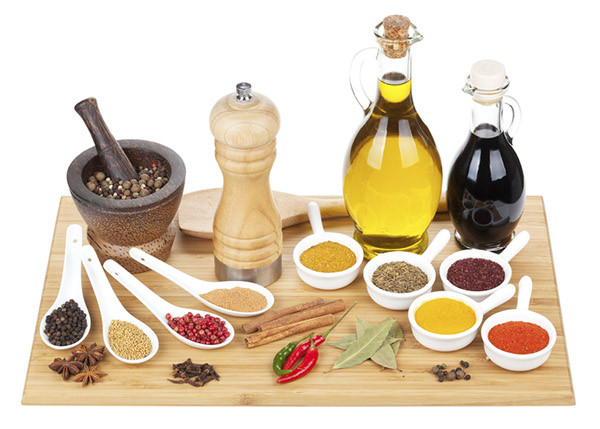

醋疗非万能，日常用醋6大误区
醋作为传统的发酵食品，含有氨基酸、有机酸、维生素和矿物元素等营养物质，适量食用对人体有益。醋是一种不错的调味品，平时也会推荐病人少吃点盐用醋来调味，这样能保护B族维生素和维生素C不被破坏，还能促进人体对铁的吸收和利用。合理“醋疗”有助消化和增进食欲。但下面这些醋疗功效被夸大了。
1、60天远离高血压纯瞎扯
网上有很多关于醋疗降低血压神奇功效的说法：“巧吃醋，60天远离高血压”就流传甚广。对此，专家表示，饮食中加醋可帮高血压人群膳食中减盐，确实有益血管健康。有研究数据发现，每天坚持饮用一勺醋能刺激人体的血管细胞分泌一氧化氮，在一定程度上扩展血管。但引起血压高的原因有很多，想以简单的“醋疗”将血压控制在理想范围内比较困难，觉得有效果，更多可能是安慰剂作用。网上炒作的喝醋就能“软化血管”，提倡单靠停掉降压药，仅靠几十天喝醋“治疗”，很可能反而导致血压波动。
2、喝醋降血糖不科学
朋友圈中类似的文章还有：“糖尿病、妇科病、老年痴呆症等39种疾患统统搞定”“健康就要自己酿”。以糖尿病为例，有些人一看见醋疗这样厉害，直接降糖药也不吃了，每天就想靠喝醋降血糖或者减肥。虽然醋有一定的辅助降低餐后血糖作用，但有研究发现这种作用仅限于和高血糖指数食物(白馒头、白面包、白米饭等)一起食用，如果食物是低血糖指数食物(比如燕麦、粗粮等)，效果不明显。
3、醋不能给肠道杀菌
虽然醋一定程度上可以给食物杀菌，比如糖蒜放在醋中能长期保存，但是日常生活中我们的摄入量不足以达到给人体肠道杀菌消毒的效果，也不能预防细菌性的食物中毒。“醋能美容”“醋是碱性的，能改变酸性体质”，这些说法都只是道听途说，目前没有确切的科学依据。就体质而言，现代医学中根本没有“酸性体质”、“碱性体质”的说法，正常人体内的酸碱度(pH值)在人体三大调节系统的调节下，都会稳定在7.35~7.45之间，并不会因为吃某一种食物而改变。
4、醋泡食谱营养不变
比如“醋泡蛋壳可以补钙”，首先这种吃法非常不安全，鸡蛋壳上可能含有重金属或污染了沙门氏菌;其次补钙效果远不如喝牛奶。针对醋泡黑豆、花生、黄豆等吃法，高键说，如果偏爱这种口味没有问题，但不能轻言它们对慢性病有神奇疗效，更不能用其来代替正规治疗和正常膳食。
5、醋不是人人能喝
醋疗人人皆宜?事实并非如此，胃酸过多或者是有胃病的人要格外注意，直接喝醋会更刺激胃。糖尿病患者不要喝含糖量较高的保健醋、果醋;正在服药的人也要谨慎醋疗，以免影响药效。
6、醋饮料不可保健
每天喝瓶果醋，相当于喝醋保健?果醋只是沾的醋字的“光”，其实质只是饮料。酿造醋的价格不高，很多商家就在少量普通食醋基础上加入别的食材，如大枣、桂圆、山楂等，或者添加水果汁、食用甜味剂等成分做成醋饮料，如苹果醋、梨醋来炒“概念醋”，抬高价格。其实，这类醋饮料已经没有了传统酿造醋成分和营养。如果宣称是保健醋，就应取得保健品批号。大家在买醋的时候要注意看清标签，建议选酿造醋(即以粮食、麸皮、豆类等为主要原料，经发酵工艺酿造而成)，这样才能把醋的营养吃全，尽量不要选配制醋和勾兑醋(酿造食醋与稀释后的食用醋酸混合配制而成的调味醋)。一般来说，执行标准是GB18187的是酿造醋;SB/T10337则是配制醋;而如果标为“Q/”开头的，可能是以醋为主要原料，添加了其他成分的产品。
